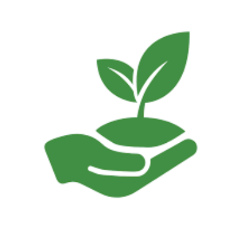
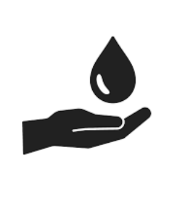
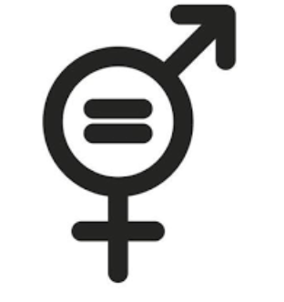

Boko-Songho: Installation d'eau potable en robinet.
Place Publique
Pour Boko-Songho, nous construisons une vision locale, solidaire et tournée vers l’avenir, avec les habitants et pour les habitants.
Découvrir notre visionUne eau tirée à plus de 2,5 km, sur les Monts Kanga, grâce à un ouvrage hydraulique écologique à gravitation naturelle. Ce projet majeur au sud de Mayanama assure désormais un accès fiable et durable à l'eau potable pour les habitants de Kinsaka. Il illustre notre engagement à améliorer concrètement les conditions de vie locales.
lire la suiteFace au défi
environnemental

Agir pour promouvoir l'agroforesterie et gérer durablement les ressources forestières du district de Boko-Songho.
Face aux inégalités
sociales

Agir pour faciliter l'accès à l'eau potable et soutenir les initiatives de développement communautaire local.
Face au besoin de
gouvernance
Agir pour encourager la participation citoyenne et la transparence dans la gestion des projets locaux.
Face aux défis
d'égalité

Agir pour soutenir l'éducation des jeunes filles et l'autonomisation économique des femmes du district.
Face aux partenariats
externes
Agir pour mobiliser des fonds et nouer des partenariats internationaux (européens, nationaux, privés) pour le développement de la région.
l'association
L'Association L'Avenir de Boko-Songho (A2BKS) est une association qui a pour objet de créer les conditions qui concourent au développement du District de Boko-Songho.
en savoir plus